Direction and possibility
The N-shaped mark and star points create a recognizable symbol of guidance, progress, and innovation.
SELECTED WORK / BRAND IDENTITY & VISUAL COMMUNICATIONS
A unified, future-focused identity designed to communicate precision, innovation, and trust across corporate touchpoints.
01 / PROJECT OVERVIEW
Northstar Technologies is a self-initiated brand identity concept exploring how a technology organization can communicate a clear, confident personality across digital and physical environments.
The concept extends beyond a logo into a consistent visual system for presentations, workplace communications, digital signage, business cards, employee badges, and apparel.
02 / FEATURED WORK
From brand positioning to practical applications, each design shares the same visual vocabulary of luminous blue, crisp typography, and directional star imagery.
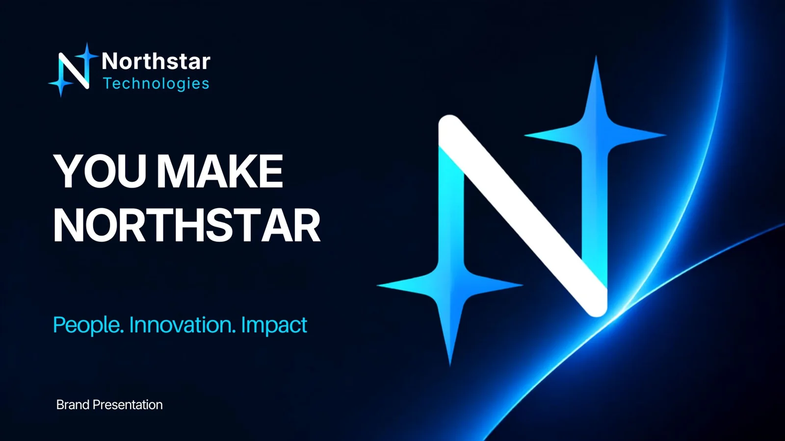
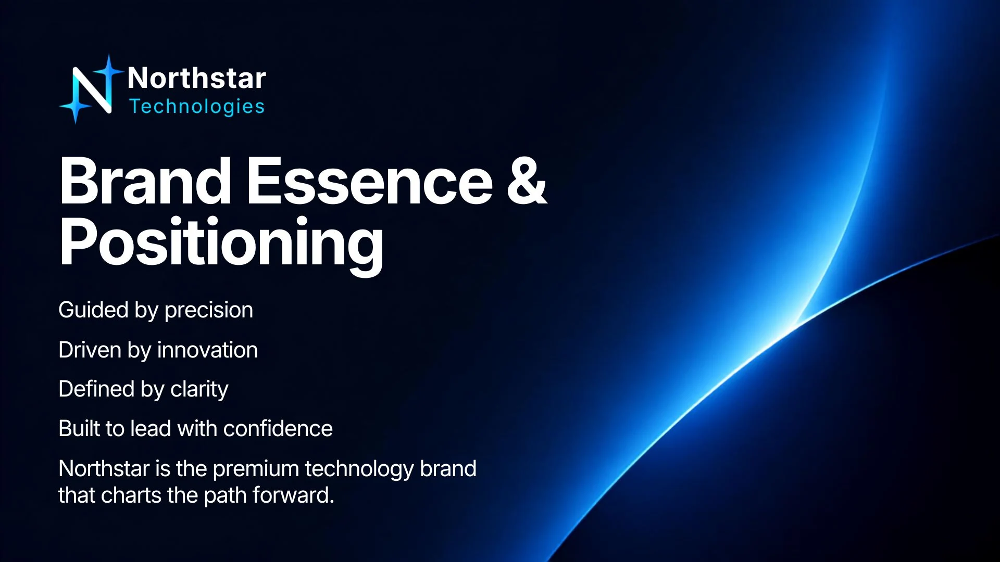
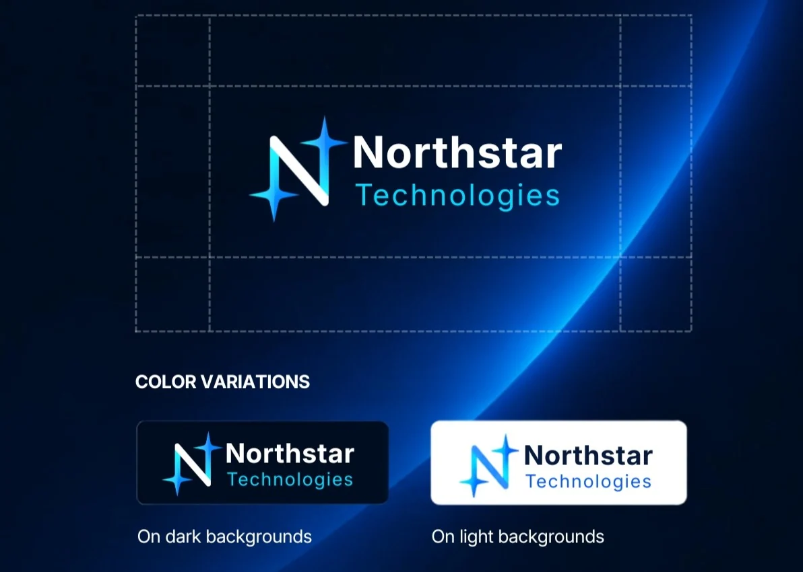
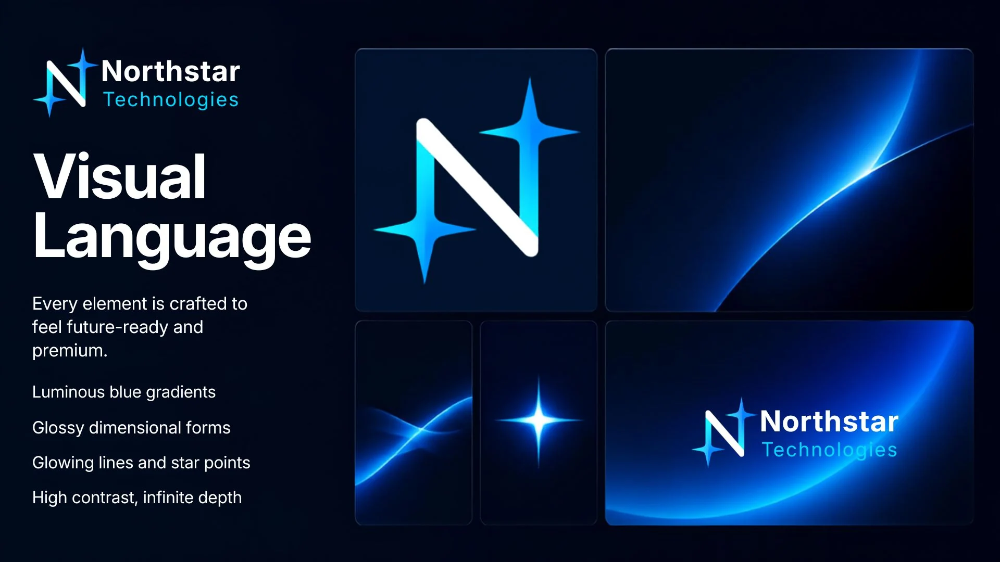
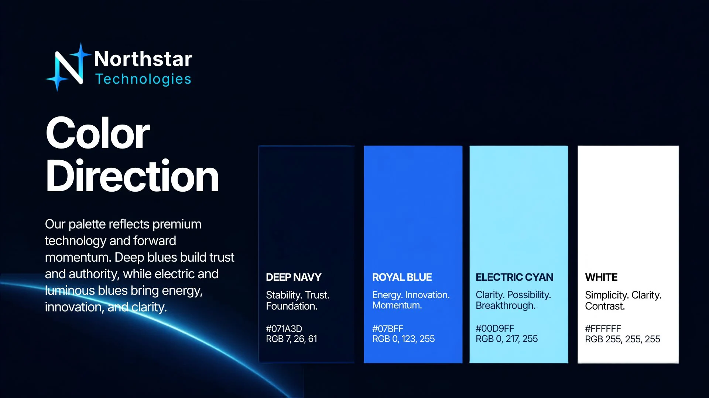
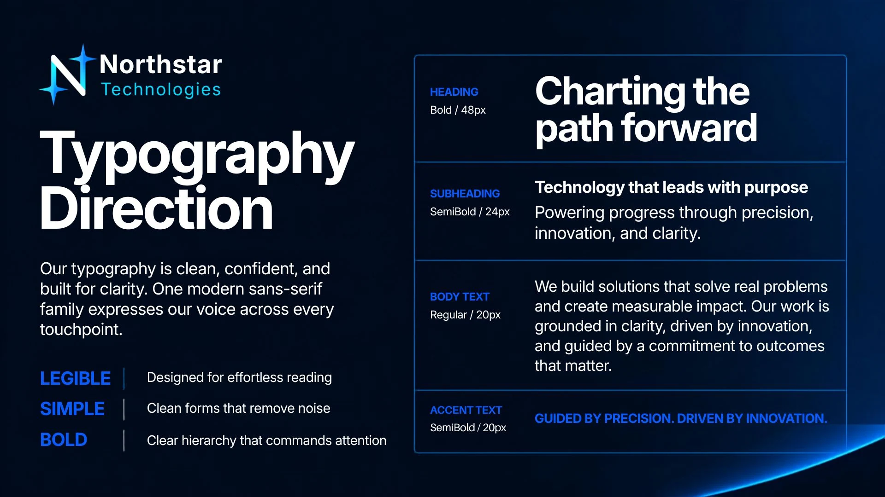
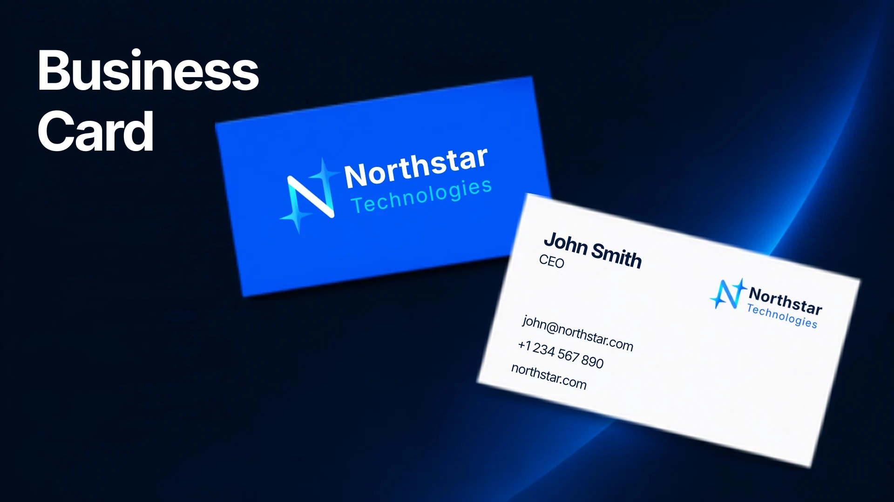
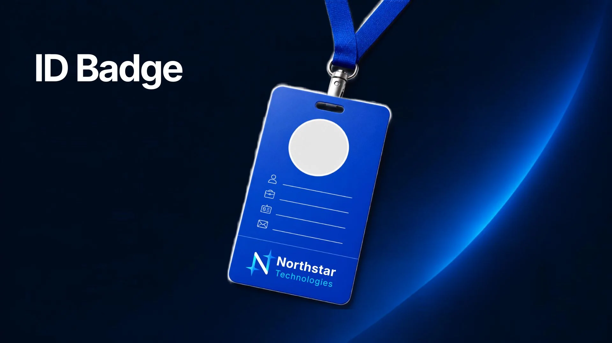
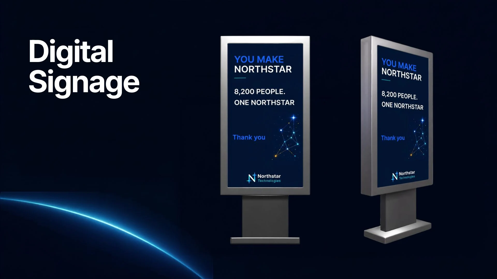
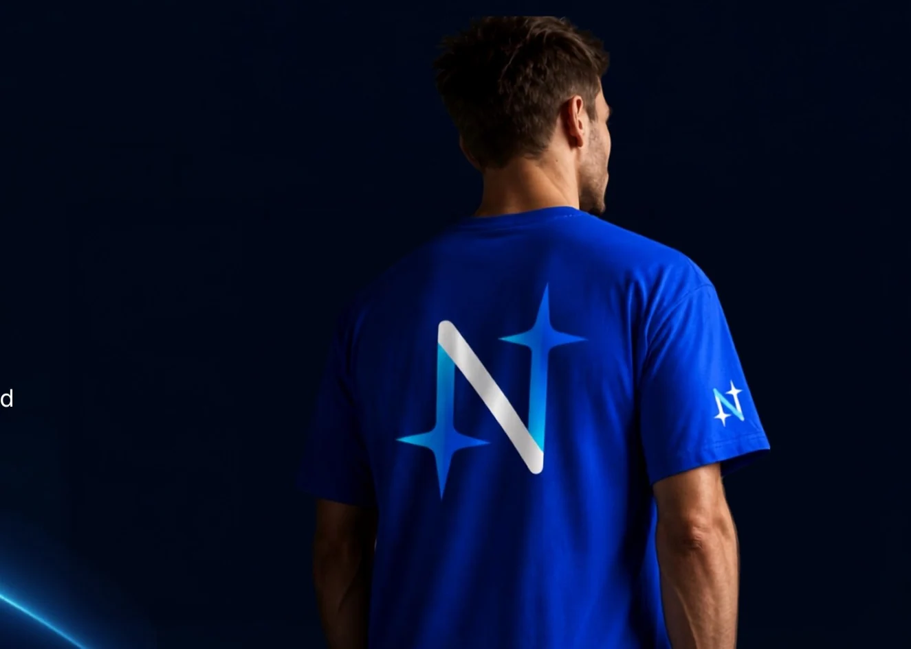
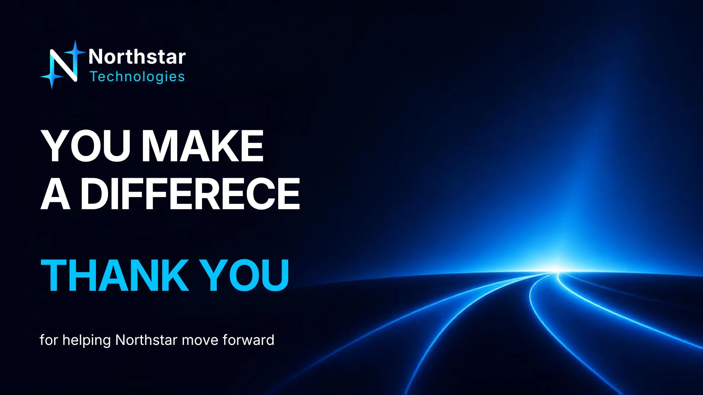
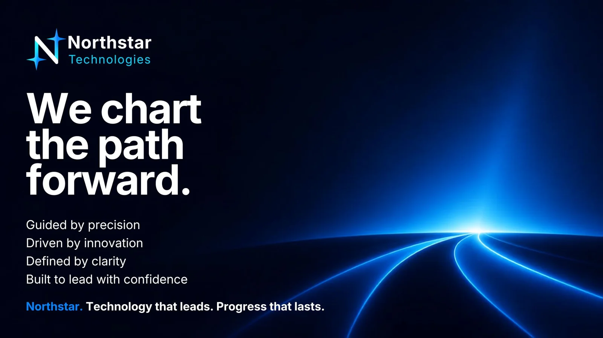
03 / CREATIVE APPROACH
The N-shaped mark and star points create a recognizable symbol of guidance, progress, and innovation.
Reusable color, typography, and graphic treatments connect every application, from small badges to large-format signage.
Strong typographic hierarchy, generous spacing, and high-contrast treatments keep the message front and center.
04 / VISUAL IDENTITY
Deep navy establishes a stable foundation. Royal blue adds energy, electric cyan brings brightness, and white keeps the system clean and legible.
Type system: Modern sans-serif, with bold headlines, semibold subheadings, and readable regular body text.
05 / APPLICATIONS
Business cards, ID badges, and branded apparel demonstrate identity consistency at a personal scale.
Digital signage and recognition graphics adapt the brand to internal employee messaging.
Large, legible headlines and distinctive blue pathways create a consistent presentation language.
06 / OUTCOME
This self-initiated project demonstrates a complete, scalable brand identity approach, connecting logo design, brand guidelines, visual storytelling, and production-ready concepts across digital and physical channels.
Portfolio note: Northstar Technologies is a conceptual project, not a commissioned client engagement. Mockups illustrate proposed brand applications.
EXPLORE MORE
Brand Identity & Investor Communications ↗ · Executive Presentations ↗